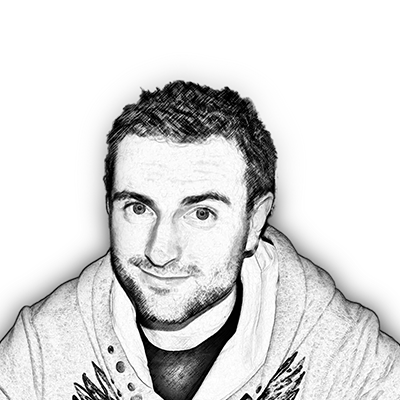

Om mig
Navn:
Født:
Adresse:
- Kirkebjerg Allé 54, 2605 Brøndby
Uddannelse:
Nye kompetencer efter 1. semester på MMD - KEA
Software
- Adobe Premiere Pro
- Adobe Audition
- Adobe InDesign
- Adobe Photoshop
- Adobe Illustrator
- Adobe Xd
- Brackets
Grundlæggende Webdesign
- Content planning
- Client Server Relations
- FTP
- HTML
- CSS
- Javascript
- jQuery
Animation
- Skitsering
- Animations principper
- Sprite animationer
- Walkcycles
- Scenografi
Content & Video
- Billede Komposition
- Video Optagelse
- Lydoptagelse
- Videoredigering
- Lydredigering
- Javascript
- Interview teknikker
UX Design
- Bruger Research
- Ideate
- Test
- AOF